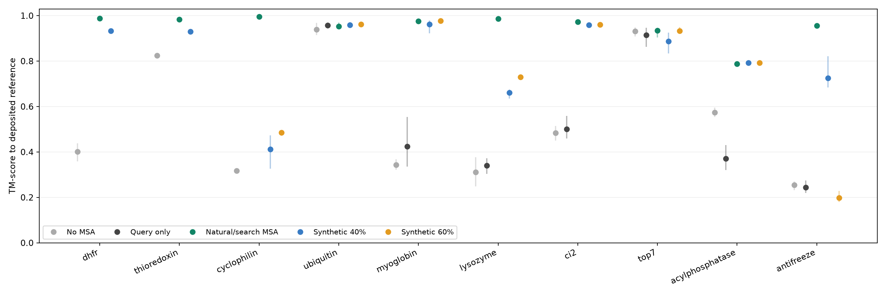

Release candidate v0.1.0 · 6 October 2026
Observed result: 50 unconstrained DPLM variants at 40% masking improve mean TM-score over no MSA in 9 of 10 proteins. Same query, OpenFold checkpoint, model seed and sample count across conditions. This is a measured input effect; evolutionary covariation, variant function and generalization to unseen proteins are not established by this experiment.
305 predictions are included once: 275 in the main comparison, 15 in the 250-variant depth extension, and 15 from superseded constrained trials. Each condition has five diffusion samples from one model seed. Query-only controls are available for the seven newer proteins. All structures, confidence files, MSAs, accepted variant pools and generation audits are included.
Setup and runnable examples · Manifest · All sample metrics · All condition means · Attribution · MIT license

| Protein / PDB | Retrieved hits | No MSA | Query only | Natural/search MSA | Synthetic 40% | Synthetic 60% |
|---|---|---|---|---|---|---|
| dhfr / 1RX2 | 15,000 | 0.401 | Not run | 0.989 | 0.933 | Not run |
| thioredoxin / 2TRX | 17,314 | 0.824 | Not run | 0.983 | 0.931 | Not run |
| cyclophilin / 1CWA | 23,735 | 0.317 | Not run | 0.995 | 0.413 | 0.485 |
| ubiquitin / 1UBQ | 20,917 | 0.939 | 0.958 | 0.954 | 0.959 | 0.961 |
| myoglobin / 1MBN | 1,296 | 0.343 | 0.424 | 0.976 | 0.962 | 0.977 |
| lysozyme / 1LYZ | 5,456 | 0.311 | 0.341 | 0.986 | 0.660 | 0.730 |
| ci2 / 2CI2 | 3,865 | 0.484 | 0.500 | 0.973 | 0.959 | 0.961 |
| top7 / 1QYS | 4 | 0.932 | 0.915 | 0.934 | 0.887 | 0.934 |
| acylphosphatase / 1APS | 10,406 | 0.574 | 0.370 | 0.789 | 0.792 | 0.793 |
| antifreeze / 1MSI | 201 | 0.254 | 0.243 | 0.957 | 0.726 | 0.198 |
Top7 is a designed protein; its four search hits are not verified natural homologs. Natural depth counts distinct aligned nonquery rows, not independent evolutionary observations. The MSA embedder uses at most 1024 rows; the sequence profile is calculated before that subsampling.
Higher masking is protein-dependent. In the shallow antifreeze case, query-only TM-score is 0.243, 40% synthetic masking reaches 0.726, and 60% masking falls to 0.198; the natural MSA reaches 0.957. Myoglobin, CI2 and acylphosphatase approach natural-MSA accuracy with synthetic input. Ubiquitin and Top7 already fold well without additional sequences.
Exploratory conditions are explicitly labeled and excluded from the 9/10 headline. Their exact residue constraints and sampling settings are preserved in generation metadata. They include the earlier temperature-3 cyclophilin trial.
| Protein | Condition | Category | RMSD Å | TM | Cα lDDT | pLDDT | pTM | Five CIFs |
|---|---|---|---|---|---|---|---|---|
| ubiquitin | no_msa | main | 1.807 | 0.939 | 0.870 | 70.775 | 0.597 | 1 2 3 4 5 |
| ubiquitin | query_only | main | 1.007 | 0.958 | 0.974 | 78.709 | 0.669 | 1 2 3 4 5 |
| ubiquitin | natural_all | main | 1.295 | 0.954 | 0.978 | 79.830 | 0.672 | 1 2 3 4 5 |
| ubiquitin | natural_50 | main | 1.039 | 0.958 | 0.975 | 79.003 | 0.673 | 1 2 3 4 5 |
| ubiquitin | synthetic_40 | main | 0.995 | 0.959 | 0.975 | 78.956 | 0.680 | 1 2 3 4 5 |
| ubiquitin | synthetic_60 | main | 1.043 | 0.961 | 0.976 | 79.810 | 0.690 | 1 2 3 4 5 |
| myoglobin | no_msa | main | 13.628 | 0.343 | 0.407 | 44.763 | 0.280 | 1 2 3 4 5 |
| myoglobin | query_only | main | 14.016 | 0.424 | 0.442 | 41.946 | 0.247 | 1 2 3 4 5 |
| myoglobin | natural_all | main | 0.793 | 0.976 | 0.937 | 91.266 | 0.891 | 1 2 3 4 5 |
| myoglobin | natural_50 | main | 0.758 | 0.978 | 0.944 | 91.079 | 0.889 | 1 2 3 4 5 |
| myoglobin | synthetic_40 | main | 0.962 | 0.962 | 0.929 | 86.340 | 0.828 | 1 2 3 4 5 |
| myoglobin | synthetic_60 | main | 0.778 | 0.977 | 0.939 | 86.840 | 0.825 | 1 2 3 4 5 |
| lysozyme | no_msa | main | 15.414 | 0.311 | 0.282 | 31.913 | 0.161 | 1 2 3 4 5 |
| lysozyme | query_only | main | 13.858 | 0.341 | 0.364 | 37.202 | 0.209 | 1 2 3 4 5 |
| lysozyme | natural_all | main | 0.507 | 0.986 | 0.960 | 93.072 | 0.908 | 1 2 3 4 5 |
| lysozyme | natural_50 | main | 0.521 | 0.986 | 0.960 | 93.012 | 0.908 | 1 2 3 4 5 |
| lysozyme | synthetic_40 | main | 7.574 | 0.660 | 0.618 | 63.440 | 0.600 | 1 2 3 4 5 |
| lysozyme | synthetic_60 | main | 7.443 | 0.730 | 0.681 | 69.785 | 0.690 | 1 2 3 4 5 |
| ci2 | no_msa | main | 8.682 | 0.484 | 0.445 | 49.196 | 0.324 | 1 2 3 4 5 |
| ci2 | query_only | main | 6.611 | 0.500 | 0.493 | 52.920 | 0.375 | 1 2 3 4 5 |
| ci2 | natural_all | main | 0.476 | 0.973 | 0.985 | 80.570 | 0.632 | 1 2 3 4 5 |
| ci2 | natural_50 | main | 0.599 | 0.970 | 0.982 | 81.571 | 0.657 | 1 2 3 4 5 |
| ci2 | synthetic_40 | main | 0.714 | 0.959 | 0.957 | 76.633 | 0.604 | 1 2 3 4 5 |
| ci2 | synthetic_60 | main | 0.638 | 0.961 | 0.978 | 77.549 | 0.603 | 1 2 3 4 5 |
| top7 | no_msa | main | 1.057 | 0.932 | 0.917 | 80.259 | 0.720 | 1 2 3 4 5 |
| top7 | query_only | main | 1.305 | 0.915 | 0.894 | 74.411 | 0.630 | 1 2 3 4 5 |
| top7 | natural_all | main | 1.033 | 0.934 | 0.918 | 80.142 | 0.718 | 1 2 3 4 5 |
| top7 | natural_50 | main | 1.115 | 0.921 | 0.905 | 75.159 | 0.631 | 1 2 3 4 5 |
| top7 | synthetic_40 | main | 1.468 | 0.887 | 0.878 | 73.298 | 0.611 | 1 2 3 4 5 |
| top7 | synthetic_60 | main | 1.002 | 0.934 | 0.920 | 70.545 | 0.608 | 1 2 3 4 5 |
| acylphosphatase | no_msa | main | 13.040 | 0.574 | 0.389 | 45.339 | 0.329 | 1 2 3 4 5 |
| acylphosphatase | query_only | main | 12.852 | 0.370 | 0.337 | 44.926 | 0.275 | 1 2 3 4 5 |
| acylphosphatase | natural_all | main | 3.341 | 0.789 | 0.753 | 85.593 | 0.775 | 1 2 3 4 5 |
| acylphosphatase | natural_50 | main | 3.285 | 0.794 | 0.753 | 86.613 | 0.800 | 1 2 3 4 5 |
| acylphosphatase | synthetic_40 | main | 3.497 | 0.792 | 0.748 | 81.768 | 0.747 | 1 2 3 4 5 |
| acylphosphatase | synthetic_60 | main | 3.422 | 0.793 | 0.750 | 85.655 | 0.789 | 1 2 3 4 5 |
| antifreeze | no_msa | main | 12.211 | 0.254 | 0.322 | 50.755 | 0.236 | 1 2 3 4 5 |
| antifreeze | query_only | main | 12.141 | 0.243 | 0.332 | 48.813 | 0.241 | 1 2 3 4 5 |
| antifreeze | natural_all | main | 1.146 | 0.957 | 0.968 | 83.735 | 0.674 | 1 2 3 4 5 |
| antifreeze | natural_50 | main | 0.650 | 0.971 | 0.980 | 87.766 | 0.765 | 1 2 3 4 5 |
| antifreeze | synthetic_40 | main | 4.040 | 0.726 | 0.735 | 59.945 | 0.385 | 1 2 3 4 5 |
| antifreeze | synthetic_60 | main | 24.361 | 0.198 | 0.202 | 64.534 | 0.199 | 1 2 3 4 5 |
| dhfr | natural_50 | main | 0.565 | 0.987 | 0.973 | 85.794 | 0.813 | 1 2 3 4 5 |
| dhfr | natural_all | main | 0.530 | 0.989 | 0.977 | 82.649 | 0.779 | 1 2 3 4 5 |
| dhfr | no_msa | main | 13.717 | 0.401 | 0.349 | 35.372 | 0.252 | 1 2 3 4 5 |
| dhfr | exploratory_constrained_50 | exploratory | 0.915 | 0.968 | 0.942 | 84.730 | 0.809 | 1 2 3 4 5 |
| thioredoxin | natural_50 | main | 0.614 | 0.982 | 0.970 | 90.820 | 0.886 | 1 2 3 4 5 |
| thioredoxin | natural_all | main | 0.585 | 0.983 | 0.971 | 89.845 | 0.868 | 1 2 3 4 5 |
| thioredoxin | no_msa | main | 2.751 | 0.824 | 0.771 | 63.685 | 0.562 | 1 2 3 4 5 |
| thioredoxin | exploratory_constrained_50 | exploratory | 0.712 | 0.980 | 0.967 | 90.551 | 0.883 | 1 2 3 4 5 |
| cyclophilin | natural_50 | main | 1.622 | 0.959 | 0.929 | 89.428 | 0.880 | 1 2 3 4 5 |
| cyclophilin | natural_all | main | 0.345 | 0.995 | 0.994 | 93.418 | 0.920 | 1 2 3 4 5 |
| cyclophilin | no_msa | main | 16.905 | 0.317 | 0.260 | 33.607 | 0.212 | 1 2 3 4 5 |
| cyclophilin | exploratory_constrained_50 | exploratory | 16.820 | 0.325 | 0.251 | 35.046 | 0.215 | 1 2 3 4 5 |
| dhfr | synthetic_40 | main | 1.650 | 0.933 | 0.869 | 80.680 | 0.788 | 1 2 3 4 5 |
| thioredoxin | synthetic_40 | main | 1.407 | 0.931 | 0.890 | 85.662 | 0.833 | 1 2 3 4 5 |
| cyclophilin | synthetic_40 | main | 13.306 | 0.413 | 0.300 | 33.648 | 0.254 | 1 2 3 4 5 |
| dhfr | synthetic_40_n250 | depth_extension | 0.930 | 0.966 | 0.924 | 78.887 | 0.726 | 1 2 3 4 5 |
| thioredoxin | synthetic_40_n250 | depth_extension | 0.876 | 0.969 | 0.945 | 88.754 | 0.863 | 1 2 3 4 5 |
| cyclophilin | synthetic_40_n250 | depth_extension | 14.292 | 0.401 | 0.304 | 34.864 | 0.273 | 1 2 3 4 5 |
| cyclophilin | synthetic_60 | main | 12.867 | 0.485 | 0.368 | 42.455 | 0.354 | 1 2 3 4 5 |
Raw data, reference sequences and metadata are indexed by manifest.json. No model weights, credentials or cloud account identifiers are included.